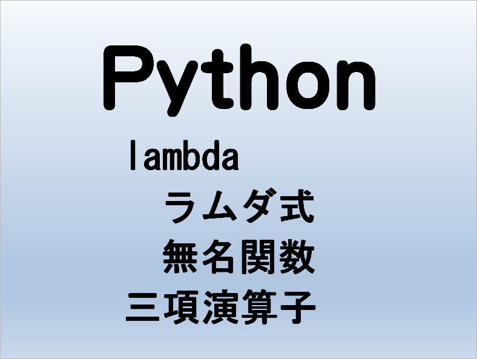

第15回.lambda（ラムダ式、無名関数）と三項演算子

関数は一連の処理をまとめることで再利用可能にした、プログラム内の小さなプログラムのようなものです。
Pythonでの関数の記述方法としてlambda（ラムダ式、無名関数）があります。
関数を引数に取る関数（高階関数)を呼び出す場合などで、その場で関数を定義したい場合にlambdaは良く使われます。
目次
lamdba（ラムダ式）の基本
lambda（ラムダ式）は、名前を持たない無名関数を作成できます。
繰り返し使う事のない関数オブジェクトを作成するときに適していて、
高階関数(関数を引数に取る関数)の引数に関数オブジェクトを渡す場合などに使われます。
関数を1行で済ますことができ、1回だけ使えば良いという場合に気軽に書けることが良さになります。
複数個所で同じラムダ式を書くのなら、def文で通常の関数にしたほうが良いでしょう。
したがって、使用場面はある程度限られてしまいますが、Pythonをやるなら是非習得しておきたいものです。
lambdaの構文
def 無名(引数1, 引数2=値, ...):
return 戻り値の式lambda 引数1, 引数2, ... : 戻り値の式
lambda 引数1, 引数2=値: 戻り値の式
lambda *args1, **kwargs: 戻り値の式
単純に次のように覚えておけば良いでしょう。
lambdaの使い方：print()関数
lambda（ラムダ式）に名前を付けることはPEP8では推奨されていません。
直接ラムダ式に値を渡してからprintの引数に指定してみます。
結果の6がprint関数に渡されます。
lambdaの使い方：sorted()関数
sorted()関数の構文
第10回.タプル（tuple型、イミュータブル）：タプルの並べ替え（sorted関数）
sorted(iterable, *, key=None, reverse=False)
リストのそれぞれの要素から比較キーを取り出すのに使います。
文字列長で並べ替える
lang = ("Python","VBA","GAS","Java","C","JavaScript")
print(sorted(lang,key=len))組み込みに無い方法で並べ替える場合は、自作関数を作成します。
文字を後ろの文字から見た順に並べ替える
def rev(s):
return s[::-1]
lang = ("Python","VBA","GAS","Java","C","JavaScript")
print(sorted(lang,key=rev))※大文字小文字の順に並びます。
※[::-1]、start,stop,stepこのstepに-1だけを指定することで文字列を逆順にしています。
lang = ("Python","VBA","GAS","Java","C","JavaScript")
print(sorted(lang,key=lambda s:s[::-1]))lambda（ラムダ式）は関数なので、受け取った値に対して決められた処理を行い値を返します。
sorted()関数は、第1引数の値とlambda（ラムダ式）の戻り値を使い並べ替えを行います。
三項演算子：lambdaで条件分岐
3項演算子の構文
if 条件式:
真の式
else:
偽の式真の式 if 条件式 else 偽の式
演算子は、各項の値によって何らかの値を返すものです。
二項で演算を行い値を返します。
三項演算子は、三項で演算を行い値を返します。
条件式を評価し、Trueなら第1項の「真の式」を返し、Falseなら「偽の式」を返します。
したがってif文で分岐させることはできません。
そこで、この三項演算子を使って条件分岐させます。
3の倍数は"OK"、以外は"NG"
print((lambda n:"OK" if n % 3 == 0 else "NG")(3))
print((lambda n:"OK" if n % 3 == 0 else "NG")(5))
ネストの例題は一番最後に掲載しています。
filter()関数とlamdba（ラムダ式）
filter()関数
| function | 引数をとる関数を指定します。 |
| iterable | シーケンスか反復をサポートするコンテナかイテレータです。 |
戻り値は、リストではなくfilterオブジェクトです。
3の倍数だけ出力：1～10
print(list(filter(lambda n:n if n % 3 == 0 else None, range(1,11))))
map()関数とlamdba（ラムダ式）
map()関数
| function | 引数をとる関数を指定します。 |
| iterable | シーケンスか反復をサポートするコンテナかイテレータです。 |
追加のiterable引数が渡されたら、functionはその数だけの引数を取らなければならず、全てのイテラブルから並行して取られた要素に適用されます。
複数のイテラブルが与えられたら、このイテレータはその中の最短のイテラブルが尽きた時点で止まります。
戻り値は、リストではなくmapオブジェクトです。
3の倍数は3倍、以外は2倍：1～10
print(list(map(lambda n:n * 3 if n % 3 == 0 else n * 2, range(1,11))))
FizzBuzz問題をやってみましょう
・5で割り切れるときは"Buzz"
・両方で割り切れるときは"FizzBuzz"
print(list(map(lambda n:"Fizz Buzz" if n % 15 == 0 else "Fizz" if n % 3 == 0 else "Buzz" if n % 5 == 0 else n, range(1,21))))
同じテーマ「Python入門」の記事
第12回.組み込み関数一覧
第13回.関数の定義（def文）と引数
第14回.関数内関数（関数のネスト）とスコープ
第15回.lambda（ラムダ式、無名関数）と三項演算子
第16回.Pythonの引数は参照渡しだが・・・
第17回.リスト内包表記
第18回.例外処理（try文）とexception一覧
第19回.import文（パッケージ・モジュールのインポート）
第20回.フォルダとファイルの一覧を取得（os,glob,pathlib）
第21回.CSV読み込みとopen()関数とwith文
第22回.CSV読み書き（csvモジュール）
新着記事NEW ・・・新着記事一覧を見る
VBA100本ノック 100本目：WEBから100本ノックのリストを取得｜VBA練習問題（3月3日）
VBA100本ノック 99本目：自動席替え（行列と前後左右が全て違うように）｜VBA練習問題（3月2日）
VBA100本ノック 98本目：席替えルールが守られているか確認｜VBA練習問題（3月1日）
VBA100本ノック 97本目：Accessデータを取得（グループ集計）｜VBA練習問題（2月27日）
VBA100本ノック 96本目：Accessデータを取得（マスタ結合&抽出）｜VBA練習問題（2月26日）
VBA100本ノック 95本目：図形のテキストを検索するフォーム作成｜VBA練習問題（2月24日）
VBA100本ノック 94本目：表範囲からHTMLのtableタグを作成｜VBA練習問題（2月23日）
VBA100本ノック 93本目：複数ブックを連結して再分割｜VBA練習問題（2月22日）
VBA100本ノック 92本目：セルの色を16進で返す関数｜VBA練習問題（2月20日）
VBA100本ノック 91本目：時間計算（残業時間の月間合計）｜VBA練習問題（2月19日）
アクセスランキング ・・・ ランキング一覧を見る
1.最終行の取得（End,Rows.Count）｜VBA入門
2.RangeとCellsの使い方｜VBA入門
3.変数宣言のDimとデータ型｜VBA入門
4.マクロって何？VBAって何？｜VBA入門
5.Range以外の指定方法（Cells,Rows,Columns）｜VBA入門
6.セルのコピー&値の貼り付け（PasteSpecial）｜VBA入門
7.繰り返し処理（For Next)｜VBA入門
8.セルに文字を入れるとは（Range,Value）｜VBA入門
9.マクロはどこに書くの（VBEの起動）｜VBA入門
10.とにかく書いてみよう（Sub,End Sub）｜VBA入門
このサイトがお役に立ちましたら「シェア」「Bookmark」をお願いいたします。
記述には細心の注意をしたつもりですが、
間違いやご指摘がありましたら、「お問い合わせ」からお知らせいただけると幸いです。
掲載のVBAコードは動作を保証するものではなく、あくまでVBA学習のサンプルとして掲載しています。
掲載のVBAコードは自己責任でご使用ください。万一データ破損等の損害が発生しても責任は負いません。